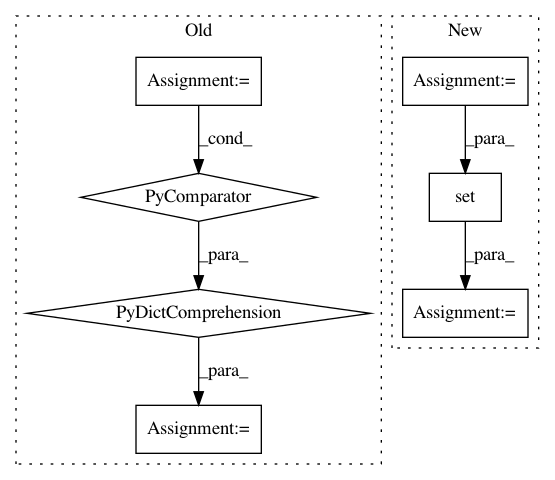

a57cfa61b45cb0c0147d529ad51daa24cefc7bd5,skbio/diversity/beta/_unifrac.py,,weighted_unifrac,#Any#Any#Any#Any#Any#,87
Before Change
73, 1576–1585 (2007).
u_observed_otus = {o: c for o, c in zip(otu_ids, u_counts) if c >= 1}
u_total_count = sum(u_counts)
v_observed_otus = {o: c for o, c in zip(otu_ids, v_counts) if c >= 1}
v_total_count = sum(v_counts)
if u_total_count == 0 and v_total_count == 0:
After Change
u_obs_otu_counts = _observed_otu_counts(u_counts, otu_ids)
u_total_count = sum(u_counts)
v_obs_otu_counts = _observed_otu_counts(v_counts, otu_ids)
v_total_count = sum(v_counts)
u_obs_nodes = tree.observed_node_counts(u_obs_otu_counts)
v_obs_nodes = tree.observed_node_counts(v_obs_otu_counts)
uv_obs_nodes = set(u_obs_nodes) | set(v_obs_nodes)
if len(uv_obs_nodes) == 0:
// boundary case where both communities have no members
return 0.0
weighted_unifrac = 0
In pattern: SUPERPATTERN
Frequency: 3
Non-data size: 7
Instances
Project Name: biocore/scikit-bio
Commit Name: a57cfa61b45cb0c0147d529ad51daa24cefc7bd5
Time: 2015-08-07
Author: gregcaporaso@gmail.com
File Name: skbio/diversity/beta/_unifrac.py
Class Name:
Method Name: weighted_unifrac
Project Name: dmlc/gluon-nlp
Commit Name: 03b0e7061cf477fbeccb9c128ee76603df582d86
Time: 2018-09-04
Author: leonard@lausen.nl
File Name: scripts/word_embeddings/evaluate_pretrained.py
Class Name:
Method Name:
Project Name: hanxiao/bert-as-service
Commit Name: 624f5b31d0572da62f8a61f51d49a157717c9a51
Time: 2019-01-21
Author: hanhxiao@tencent.com
File Name: benchmark.py
Class Name:
Method Name: